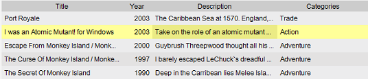

Table View
Menu path: View > Table View
The table view is an Excel like listing of the items. One row is one item.
With the view settings you can change which columns /
fields are displayed in this view.

Sorting
Besides the normal sorting options (explained here) you have a quicker way
of sorting available in the table view. Simply click on the header to sort the content of the view.
Editing values
Editing a value in the table is straightforward. Click on the cell and you can either enter text
(for text fields), enter a number (for numeric fields) or select a value from the list. With text fields
you can also switch to the edit mode by pressing F2. Once satisfied make sure to save the items you have edited
by pressing  (save all) or
(save all) or  (save the selected item only) on the toolbar.
(save the selected item only) on the toolbar.
The rest is explained here.